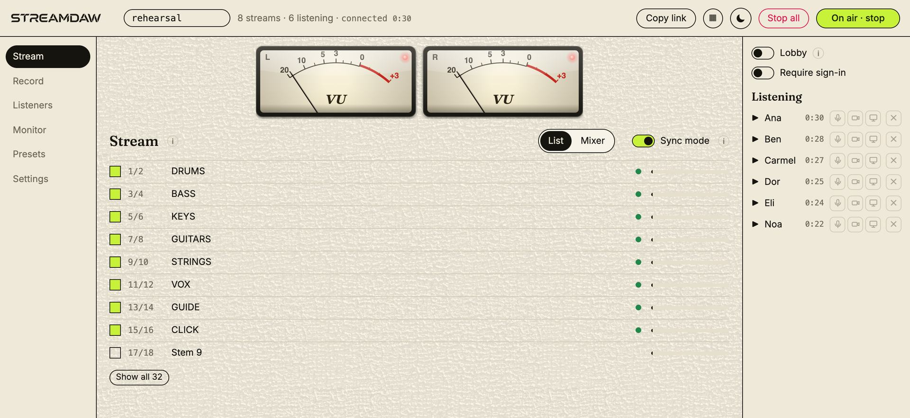
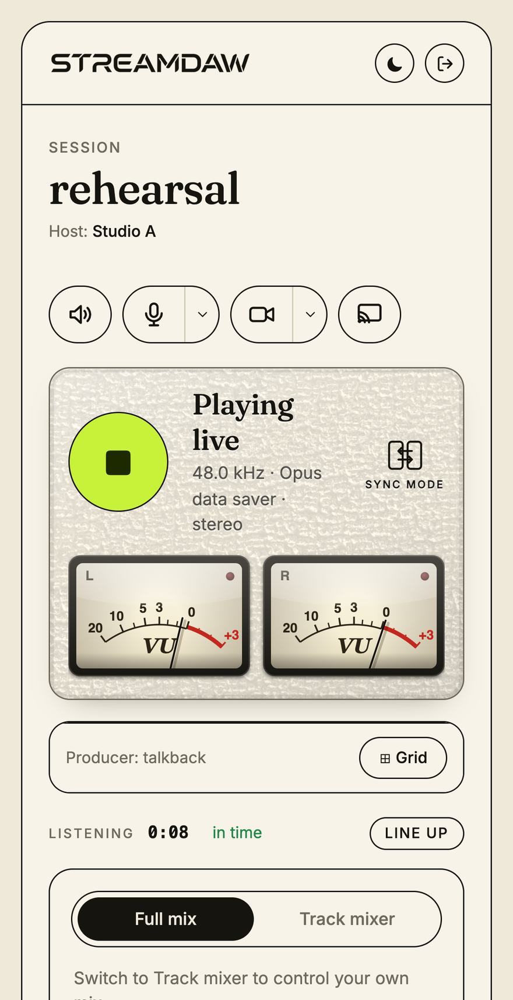

Apps
Tools for people
who make sound.
Every app here started as something missing from our own sessions, then got finished properly. Each one runs on your Mac — in its own window and inside your DAW — and each has a page of its own with the films, the fine print and the prices.
Mac, Apple siliconApp and plug-inA free way in


Stream your DAW.
Live. Lossless.
Anyone with the link or the QR code hears your session as you play it, lossless, with nothing for them to install — and each listener keeps a mix of their own.
- Runs on
- Mac with Apple silicon, macOS 12 or later
- Comes as
- App and AU / VST3 plug-in
- Price
- Free on your master mix — a link, a QR code, up to 60 minutes a session. Pro $8.99 a month, or $81 once.




Every part, apart.
Clean. Local.
Drop in any recording and it comes apart — voice, drums, bass, guitars, keys — each part repaired, mixed and exported without ever leaving your Mac.
- Runs on
- Mac with Apple silicon, macOS 14 or later
- Comes as
- App and AU / VST3 plug-in
- Price
- 7 days free, no card. Then $5.99 a month, or $49 once.
- One account
- One Snowstar sign-in covers both — your downloads, keys and licences in one place.
- Your machine
- Both run on your Mac. Audioctor uploads nothing; StreamDAW sends only the stream you start.
- Your currency
- Prices read in the currency you pick in the menu. Cards are charged in shekels, and every screen that takes a payment says so.
They are separate apps at separate prices. Neither one needs the other to work.
Not apps, but also ours: Mutra licenses our music for your project, and Snowstash finds music royalties you are owed. Something else? Tell us the job — if we have built it we will send the link, and if we have not, you have told us what to build next.